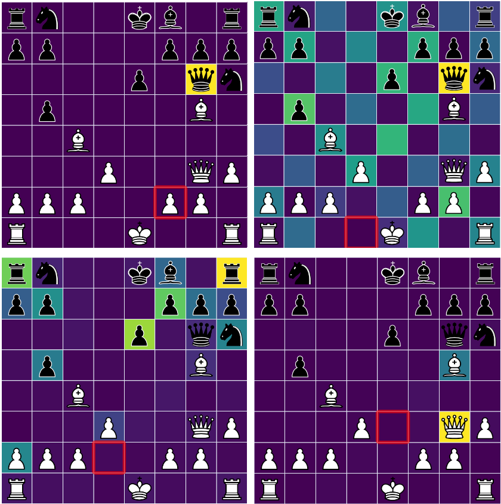
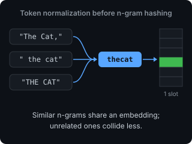

Projects
Chessformer ICLR 2026
Beat Stockfish at three TCEC chess championships.
- A model organism for mechanistic interpretability, studied by Jenner et al. (NeurIPS 2024, Stuart Russell’s group), Cruz (TMLR 2025) and Sandmann et al. (2025).
- Outperforms DeepMind’s chess transformers with 30x less inference compute.
- A geometry-aware attention bias that matches the strength of a 2.5x larger model at ~15% higher latency.

NanoGPT Speedrunning
Two record submissions to the GPT-2 pretraining speedrun on 8×H100.
- 725 → 685 training steps from validation-time hints drawn from all unused data shards, with 4-token context and top-5 candidate continuations.
- 1.0% less wall-clock time at lower loss from token normalization before n-gram embedding hashing, inspired by DeepSeek’s Engram.

Stockfish Development
Merged 15 Elo playing strength improvements into Stockfish, the world’s strongest chess engine.
- 2.5% speedup from permuting weights for block sparsity using CuPy.
- Search heuristics that use evaluation uncertainty to guide pruning and depth reduction.
- Each change validated by sequential probability ratio testing over tens of thousands of games.